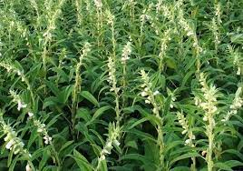
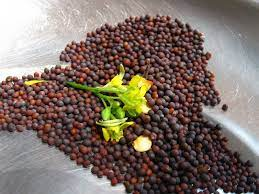
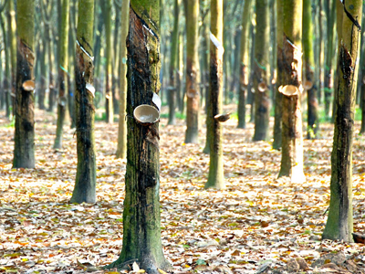

Introduction
The agricultural sector in Sri Lanka acts as a main economic strength to the national economy. It envolves crop cultivations such as Paddy, Tea, Rubber, Coconut, vegetables, fruits, export crops, and sugar while also live stock and fisheries sectors provide a substantial contribution simultaneously.
Paddy
Tea
Coconut
- Coconut Flesh
- Water in the coconut
- Coconut shell
- The outer cover of a coconut
- Coconut flower
- Coconut branches
- The truck of the coconut tree
- Other parts
Rubber
- Rubber bands
- Solid tires
- Latex gloves
- Hoses
- Floor mats
- Footwear
Oilseed Crops
-

Seasame -

Mustard 'Aba'
Rice is the staple food of the inhabitants of Sri Lanka. Paddy crops is cultivated as a wetland crop in all the districts. The total land devoted for paddy is estimated to be about 708,000 Hectares at present. There are two cultivation seasons namely; Maha and Yala which are synonymous with two monsoons.
Sri Lanka produces tea throughout the year and the total tea production is about 340 million kilograms per annum. Sri Lanka’s tea-growing areas are mainly concentrated in the central highlands and southern inland areas of the island.
Tea grown in these areas are broadly grouped according to their elevations, with high grown tea sourced from tea plantations found from 1200 m upwards; medium grown tea from estates scattered between 600 m to 1200 m and low grown tea from sea level up to 600 m.


Coconut is a major plantation crop in Sri Lanka. Most of the coconut is concentrated in the triangle formed by Puttalam, Kurunegala and Gampaha. This area covered by these three towns is referred to as the Coconut Triangle.
Below are the parts of a coconut tree which are useful.
When starting cultivate coconut you need to consider many factors. Since it is very essential for a coconut tree to grow healthier. Some of them are soil, rainfall, relative humidity, latitudes, altitudes and salt, fertilizer and planting systems etc. You can get a better idea from here.

The traditional rubber growing districts of Sri Lanka are located mainly in the wet zone and include Colombo, Gampaha, Kalutara, Kandy, Matale, Galle, Matara,
Ratnapura and Kegalle. There is currently over 127,500 ha (315,000 acres) of land under rubber cultivation.
Today Sri Lanka is the 13th largest natural rubber
producer in the world.
Sri lankan rubber industry exclusively produces an order-free, light-colored, and clean premium quality natural rubber called Lankaprene.
Sri Lanka also produces an array of value-added products using natural rubber. Some of them are as follows.
Oilseed crops such as groundnut, sesame, sunflower and mustard are also cultivated in Sri Lanka. Groundnut is grown mainly in Moneragala, Hambantota, Kurunegala, Anuradhapura, Badulla, Ratnapura and Puttalam districts. Though groundnut is an oil crop, it has a demand as a snack and confectionery in Sri Lanka.